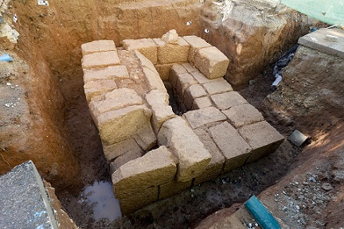

|
IBIZA y FORMENTERA ROMANAS
- Entre la playa de 'Es Codolar' y el 'Puig des Jondal' junto a la cala de Sa Caleta se encuentra el yacimiento fenicio del siglo VII a.e.c. - Las Pinturas rupestres de Sa Cova d´es Vi. - El Yacimiento arqueológico púnico-romano de Can Fita. - El Acueducto Romano de S´Argamassa. - En Ibiza, en enero de 2016, las obras de la travesía de Jesús han dejado
al descubierto una villa o casa púnico-romana-bizantina que ha sido
utilizada durante 800 años, entre el siglo II a.e.c y el VI. También se han
encontrado tres enterramientos o inhumaciones de época bizantina, una de
ellas de un individuo infantil, cuyos restos se encontraban en el interior
de un ánfora. En mayo de 2018 hallan restos púnico-romanos en las obras de
la Avenida de España.
 - En enero de 2016, en unas obras de la carretera de Sant Joan, se han hallado los restos de una alfarería del siglo I. Junio de 2022, primera campaña de excavaciones en el yacimiento de la finca de Can Corda, donde se encontraron vestigios de una villa púnico-romana. - En Ses Paises de Cala d´Hort se halla el sentamiento púnico-romano. - El Dolmen de Ca Na Costa. Es el sepulcro megalítico más espectacular de las Baleares. El Sepulcro se asienta directamente sobre la roca y que presenta una planta casi circular, en donde pueden distinguirse dos partes principales: lo que es propiamente la cámara funeraria, situada en el centro con el corredor de entrada a la misma, y tres anillos que circundan la cámara. Data de la edad del Bronce, y fue utilizado probablemente entre el 2000 y el 1600 a.e.c. Se hallaron enterrados ocho cuerpos. Acompañando a los cuerpos se han encontrado diferentes materiales, como botones, cuentas de collar y fragmentos de cerámica. Fue descubierto en 1974.
- El Castellum romano de Can Blai, es un edificio de carácter defensivo, descubierto en 1979. Se trata de una estructura cuadrada de 40x40m. con cinco torres rectangulares. La inexistencia de restos de construcciones interiores y de restos cerámicos, nos hace pensar que nunca fue utilizado. Se cree que es una construcción de época bajo imperial.
|